最近の活動
G20YEA Japan Councilの最近の活動をご紹介します。ウィーン、トロント、コロンボでの国際会議や、東京での交流会の様子を、公式Instagramの投稿からまとめました。
G20YEA Vienna Summit 2026
世界各国の若手起業家が集う年次サミット。MOU署名式、Leadership Assembly、B2Bマッチングなどが行われました。
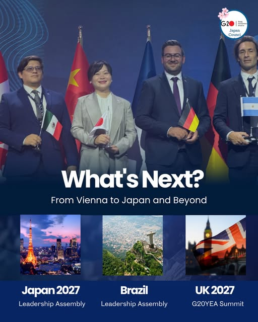
ウィーンから日本、そしてその先へ
サミットを経て、2027年は日本でのLeadership Assembly開催が検討されています。ブラジルでのLeadership Assembly、英国でのG20YEA Summitに向けた準備も進行中です。
Instagramで見る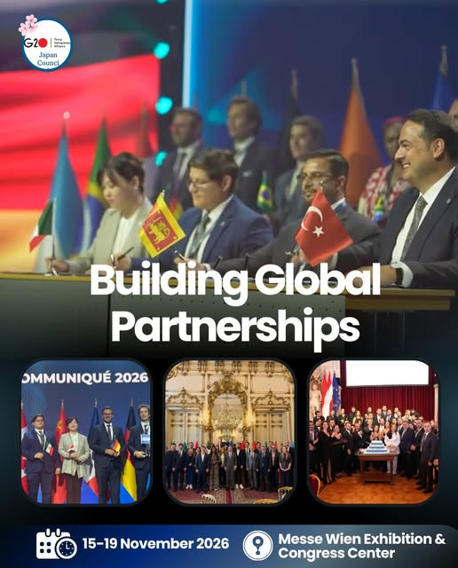
MOU署名式とLeadership Assembly
各国代表によるMOU署名式を実施。Leadership Assemblyでは、G20公式エンゲージメントグループ化を目指す取り組みや、今後のサミットの質の向上、中長期戦略を議論しました。
Instagramで見る
ウィーンサミット開催
開会式、パネルディスカッション、B2Bマッチング、ピッチコンペ、ガラディナーなど多彩なプログラム。B2Bマッチングでは新たに業種別マッチングが導入されました。
Instagramで見るG20YEA Leadership Assembly（トロント）
UNICEF「Generation Unlimited」との連携や、ウィーンサミット・2027年ロンドンサミットの準備を議論。最終日はナイアガラ地域のイノベーション拠点を視察しました。
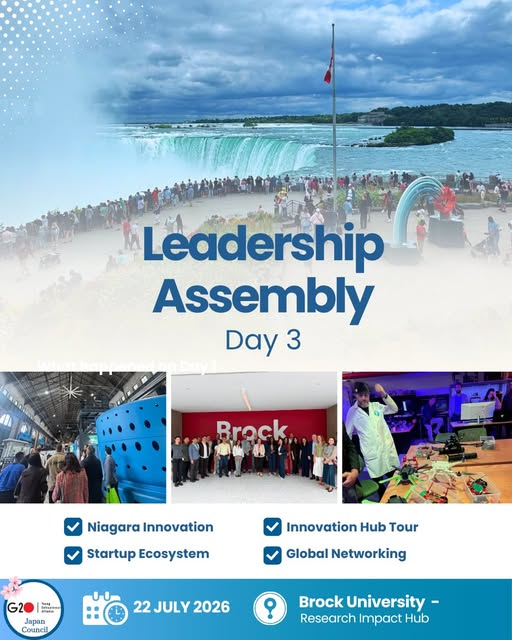
Day 3：ナイアガラのイノベーション・エコシステム
Brock University、Innovate Niagara、Niagara Falls Innovation Hubなどを視察。大学・行政・支援機関が連携してスタートアップを育成する仕組みを学びました。
Instagramで見る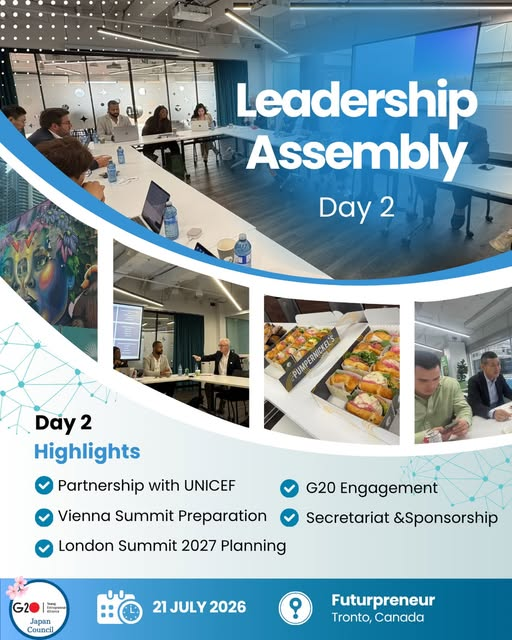
Day 2：G20YEAの今後に向けた議論
UNICEF「Generation Unlimited」との連携、ウィーン・ロンドンのサミット準備、G20とのさらなる連携強化、組織運営やスポンサーシップについて意見交換しました。
Instagramで見る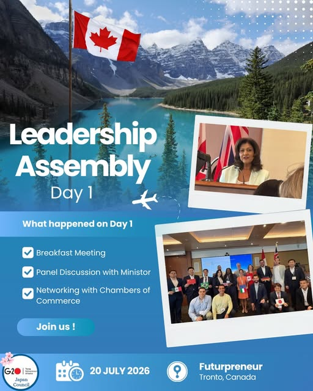
Day 1：朝食会・大臣とのパネル・商工会議所交流
2026年7月20日、Futurpreneurにて開幕。朝食ミーティング、大臣を迎えたパネルディスカッション、現地商工会議所とのネットワーキングを実施しました。
Instagramで見るFortune Generation × G20YEA Japan Council 交流会
中国の次世代ファミリービジネス経営者ネットワーク「Fortune Generation」を日本に迎え、日中合わせて60名以上の次世代リーダーが交流しました。
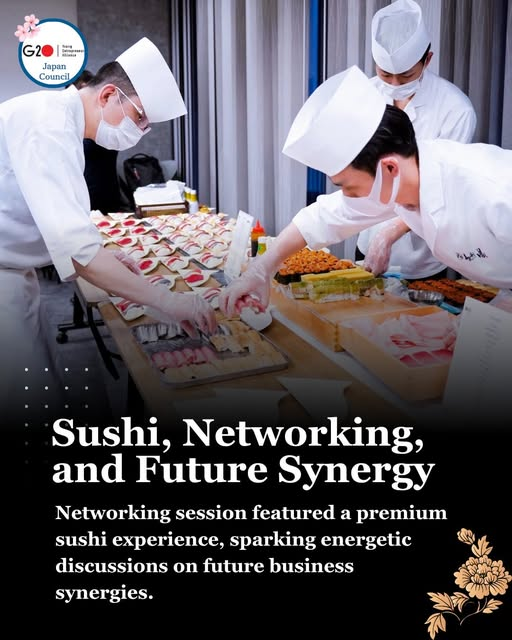
寿司を囲んだネットワーキング
交流会後半は、職人によるライブ寿司パフォーマンスとともに懇親。エネルギー、AI、医療、不動産、物流、製造業など多様な業種の経営者が語り合いました。
Instagramで見る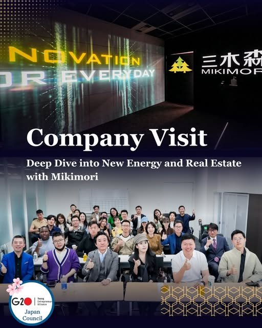
Company Visit：三木森グループ
Fortune GenerationのメンバーとともにMikimori Groupを訪問し、日本の新エネルギー事業や不動産分野について理解を深めました。
Instagramで見る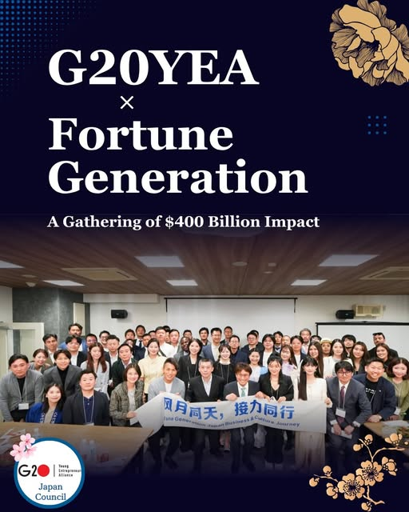
ビジネス＆カルチャー交流会を開催
テーマは「ファミリー企業をどう次世代へ繋ぐか」。基調講演では株式会社チエノワ代表取締役・田中雅也様に、日本の長寿企業に学ぶ長期経営の知恵をお話しいただきました。
Instagramで見るG20YEA Leadership Assembly（コロンボ）
G20YEAの公式エンゲージメントグループ化を見据えたガバナンス強化、加盟国拡大、ウィーンサミットと2027年UKサミットの準備を議論しました。
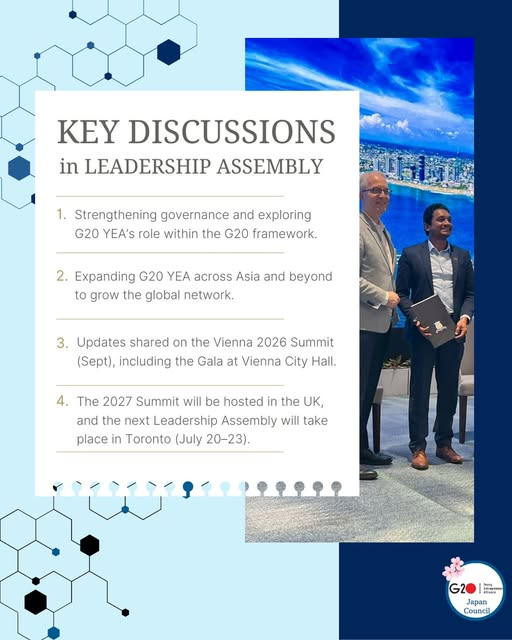
Leadership Assembly 主な成果
公式エンゲージメントグループ化を視野にしたガバナンス強化、アジアを含む加盟拡大、ウィーンサミット（9月）の準備、2027年UKサミットと次回トロント開催を確認しました。
Instagramで見る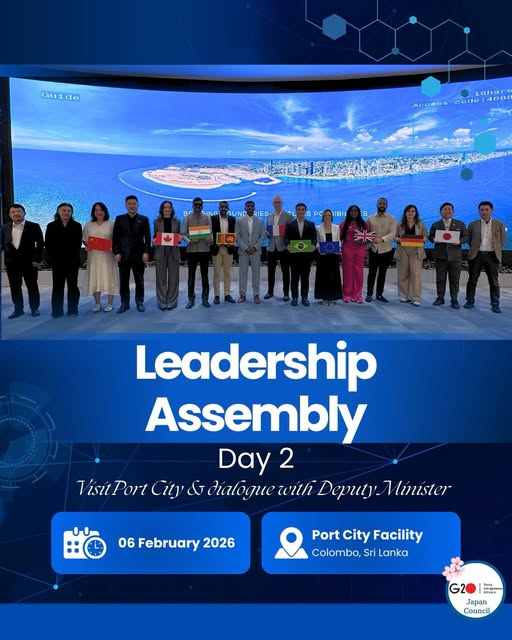
Day 2：ポートシティ視察とJETRO訪問
中国の再エネ・ビジネスマッチングの発表、2027年UKサミットの計画を議論。ポートシティ・コロンボの視察と副大臣との対話、日本団としてJETROも訪問しました。
Instagramで見る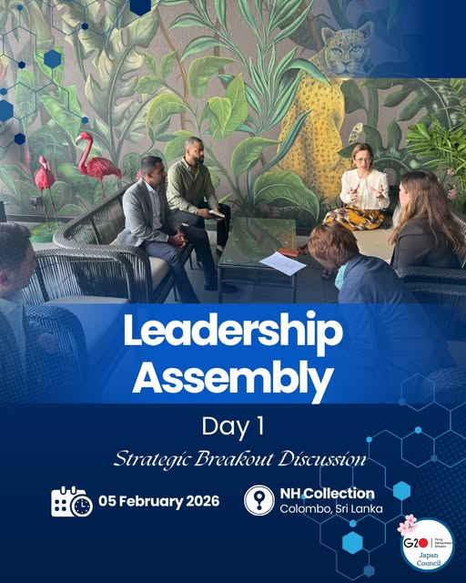
Day 1：アライアンスの基盤強化
公式エンゲージメントグループ化の可能性、ガバナンスとFoundational MoUの見直し、加盟国拡大戦略（豪州・インドネシア・韓国・米国）などを協議しました。
Instagramで見る写真・文章は 公式Instagram（@g20yea_japan_council） の投稿をもとにしています。最新の投稿はInstagramでご覧ください。
Join G20YEA
Japan Council
世界の若手起業家とつながる。入会のお申し込み・お問い合わせはこちらから。